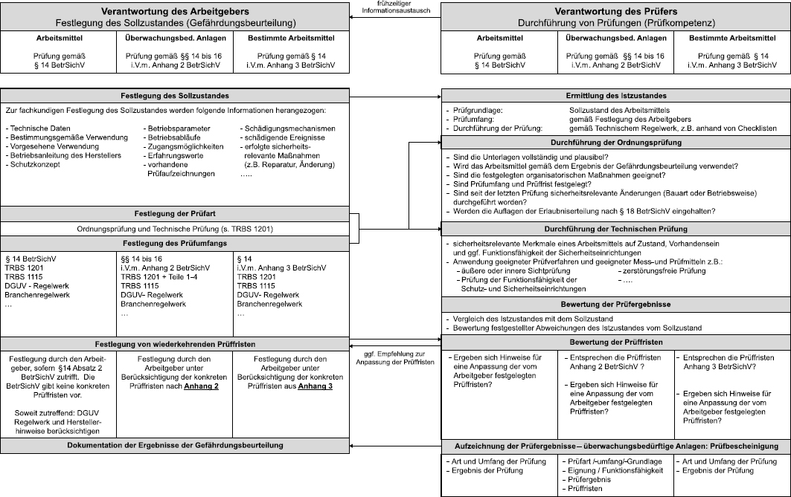
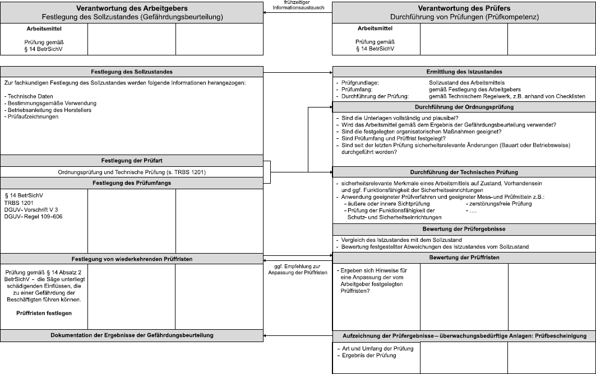
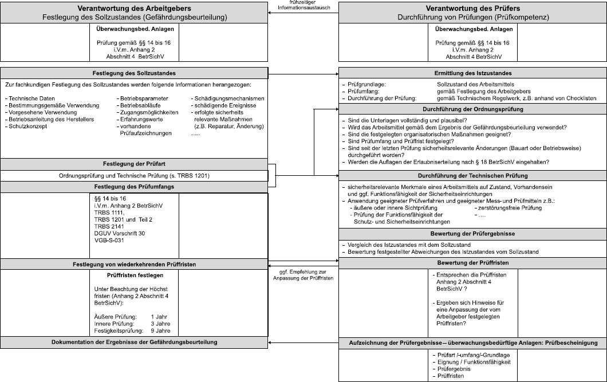
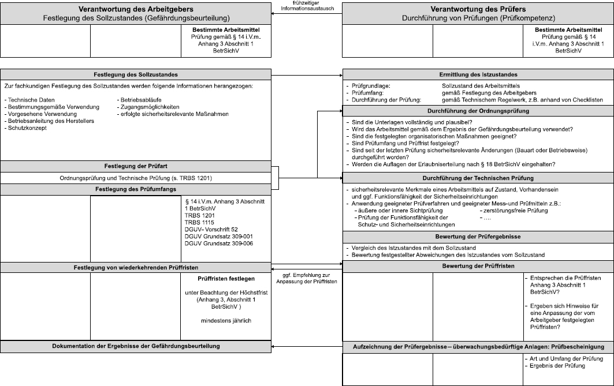

Inhalt
| 1 | Allgemeines |
| 2 | Anwendungsbeispiele |
Arbeitsmittel müssen gemäß den Vorgaben der §§ 14, 15 und 16 in Verbindung mit den Anhängen 2 und 3 BetrSichV geprüft werden. Die Prüfung eines Arbeitsmittels umfasst gemäß § 2 Absatz 8 BetrSichV
Der Istzustand ist der bei der Prüfung festgestellte Zustand des Arbeitsmittels.
Um den Vergleich mit dem Istzustand und die Bewertung von Abweichungen durchführen zu können, benötigt der Prüfer die Festlegungen des Arbeitgebers zum Sollzustand des Arbeitsmittels.
Der Sollzustand ist der sichere Zustand des Arbeitsmittels, den der Arbeitgeber aufgrund der ihm vorliegenden Informationen zum Arbeitsmittel selbst (z. B. Betriebsanleitung des Herstellers) und zu den betrieblichen Gegebenheiten im Rahmen der Gefährdungsbeurteilung festlegen muss (vergleiche Abschnitt 5). Auf dieser Grundlage hat der Arbeitgeber dem Prüfer die für die Prüfung erforderlichen Informationen zur Beschaffenheit des Arbeitsmittels und zu betriebsspezifischen Festlegungen zur Verfügung zu stellen.
Mit der Bereitstellung der erforderlichen Informationen schafft der Arbeitgeber die Voraussetzung für die Durchführung der Prüfung, greift aber nicht in den Verantwortungsbereich des Prüfers ein.
Für einen reibungslosen Ablauf der Prüfung empfiehlt sich ein frühzeitiger prüfungsbegleitender Austausch von Informationen zwischen Arbeitgeber und Prüfer, deren Zusammenwirken in Abbildung 1 dargestellt ist.
Der Arbeitgeber ist im Hinblick auf die Prüfung von Arbeitsmitteln verantwortlich für die Festlegung des Sollzustandes und für die Auswahl von qualifizierten Prüfern.
Zur Festlegung des Sollzustands werden Informationen benötigt, über die in der Regel nur der Arbeitgeber verfügt:
| a) | EU-Konformitätserklärung, |
| b) | Betriebsanleitung, |
| a) | Informationen zu sicherheitsrelevanten MSR-Einrichtungen, |
| b) | Informationen zur Betriebsweise (bestimmungsgemäße Verwendung, vorgesehene Verwendung, vorhersehbare Betriebsstörungen, Instandhaltungskonzept), |
| c) | Schutzkonzept einer Anlage, |
| d) | Informationen zu den Umgebungsbedingungen (z. B. Ex-Bereiche), |
| e) | Angaben zur Gestaltung der mit dem Arbeitsmittel durchgeführten Arbeitsverfahren (einschließlich Hinweise für die Beschäftigten), |
| f) | Aufzeichnungen der Ergebnisse vorangegangener Prüfungen, |
| g) | Unterlagen über seit der letzten Prüfung durchgeführte Änderungen. |
Der Prüfer (zur Prüfung befähigte Person, Prüfsachverständiger, ZÜS) ist verantwortlich für die ordnungsgemäße Durchführung der Prüfung.
Zur Durchführung der Prüfung werden Prüfkompetenzen benötigt, z. B.:
Die Prüfergebnisse sind zu dokumentieren:

Abb. 3.1 Verantwortung von Arbeitgeber und Prüfer bei der Prüfung von Arbeitsmitteln
Die zuvor beschriebene Vorgehensweise des Arbeitgebers bei der Festlegung des Sollzustandes in Bezug auf die Prüfung von Arbeitsmitteln wird anhand von drei Beispielen erläutert:
| 1. Tischkreissäge | Prüfung gemäß § 14 BetrSichV, |
| 2. Dampfkesselanlage | Prüfung gemäß §§ 14 bis 16 in Verbindung mit Anhang 2 Abschnitt 4 BetrSichV, |
| 3. Brückenkran | Prüfung gemäß § 14 BetrSichV in Verbindung mit Anhang 3 Abschnitt 1 BetrSichV. |
Für jedes dieser Beispiele werden die zutreffenden Aufgaben von Arbeitgeber und Prüfer sowie deren Zusammenwirken betrachtet. Die Abbildung wurde durch Hervorhebung auf den jeweils zutreffenden Strang fokussiert und inhaltlich an die auf das jeweilige Bespiel zutreffenden Informationen und Regelwerke angepasst.
Die Beispiele verdeutlichen, dass die Vorgehensweise in der Praxis auf alle Arten von Arbeitsmitteln übertragen werden kann. Mit zunehmender Komplexität des Arbeitsmittels bzw. der Prüfaufgabe steigt der Aufwand für die Festlegung des Sollzustandes und die Durchführung und Dokumentation der Prüfaufgabe.
In einer Werkstatt befindet sich eine Tischkreissäge, die bestimmungsgemäß nach den Vorgaben des Herstellers verwendet wird. Besondere Umgebungsbedingungen gibt es nicht.

Abb. 3.2 Verantwortung von Arbeitgeber und Prüfer bei der Prüfung von Arbeitsmitteln – Beispiel Tischkreissäge
Der Arbeitgeber muss dem Prüfer die für die Durchführung der Prüfung notwendigen Informationen und insbesondere die festgelegte Prüffrist zur Verfügung stellen. Die Festlegung des Sollzustandes der Tischkreissäge ergibt sich z. B. aus den folgenden Unterlagen:
Die Prüfung wird gemäß § 14 BetrSichV von einer zur Prüfung befähigten Person durchgeführt und dokumentiert:
Bei dieser Dampfkesselanlage handelt es sich um eine ZÜS-prüfpflichtige Anlage im Sinne von Anhang 2 Abschnitt 4 Nummer 6 Tabelle 2 BetrSichV.

Abb. 3.3 Verantwortung von Arbeitgeber und Prüfer bei der Prüfung von Arbeitsmitteln – Beispiel Dampfkesselanlage
Der Arbeitgeber muss dem Prüfer die für die Durchführung der Prüfung notwendigen Informationen und insbesondere die festgelegte Prüffrist zur Verfügung stellen. Die Festlegung des Sollzustandes der Dampfkesselanlage ergibt sich z. B. aus den folgenden Unterlagen:
| a) | Druck, |
| b) | Temperatur, |
| c) | Werkstoff, |
| d) | Lastwechsel. |
Die Prüfung wird gemäß § 16 BetrSichV in Verbindung mit Anhang 2 Abschnitt 4 von einer ZÜS durchgeführt und dokumentiert:
Es handelt sich um eine Prüfung durch einen Prüfsachverständigen nach der Montage, Installation und vor der ersten Inbetriebnahme des Brückenkrans.

Abb. 3.4 Verantwortung von Arbeitgeber und Prüfer bei der Prüfung von Arbeitsmitteln – Beispiel Brückenkran
Der Arbeitgeber muss dem Prüfer die für die Durchführung der Prüfung notwendigen Informationen und insbesondere die festgelegte Prüffrist zur Verfügung stellen. Die Festlegung des Sollzustandes des Brückenkrans ergibt sich z. B. aus den folgenden Unterlagen:
Die Prüfung wird gemäß § 14 in Verbindung mit Anhang 3 BetrSichV von einem Prüfsachverständigen durchgeführt und dokumentiert: